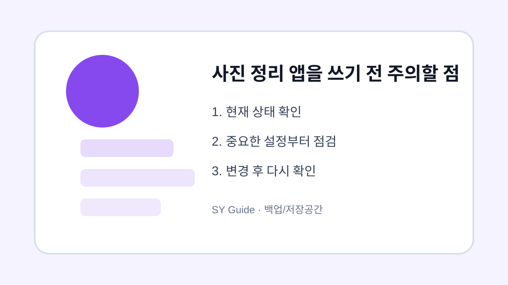

사진 정리 앱을 쓰기 전 주의할 점
사진 정리 앱을 사용하기 전 권한, 원본 삭제, 중복 판단, 클라우드 동기화 영향을 확인합니다.

사진 정리 앱은 중복 사진과 흐린 사진을 빠르게 찾아주지만, 원본을 잘못 삭제하면 복구가 어려울 수 있습니다. 앱이 사진 전체 접근 권한을 요구하는 경우도 많기 때문에 설치 전 권한과 삭제 방식을 확인해야 합니다.
권한과 개인정보 확인
사진 앱은 개인적인 이미지에 접근합니다. 가능하면 선택한 사진만 허용하는 방식을 쓰고, 앱의 개인정보 처리 방침을 확인합니다. 불필요하게 연락처나 위치 권한까지 요구한다면 신중하게 판단하세요.
중복 사진 판단은 직접 확인
정리 앱이 비슷한 사진을 중복으로 분류해도 실제로는 표정이나 구도가 다른 중요한 사진일 수 있습니다. 자동 삭제보다 직접 확인 후 삭제하는 방식이 안전합니다. 삭제 전 클라우드 백업 상태도 함께 확인합니다.
| 항목 | 확인 이유 | 권장 |
|---|---|---|
| 사진 권한 | 개인정보 | 최소 허용 |
| 자동 삭제 | 오삭제 위험 | 직접 확인 |
| 클라우드 동기화 | 전체 삭제 영향 | 백업 확인 |
삭제하거나 옮기기 전 마지막 확인
- 앱 권한을 최소 범위로 허용하기
- 자동 삭제 기능은 신중히 사용하기
- 중복 사진은 직접 비교하기
- 삭제 전 백업 완료 확인하기
- 휴지통 보관 기간을 알아두기
사진 정리 앱은 도구일 뿐 최종 판단은 사용자가 해야 합니다. 중요한 사진이 섞여 있다면 천천히 확인하며 정리하는 편이 안전합니다.
사진 백업에서 먼저 확인할 저장 위치
사진 백업을 정리하기 전에는 원본이 기기 안에 있는지, 클라우드에 동기화된 사본인지, 휴지통으로 이동한 상태인지 구분해야 합니다. 이 구분이 안 되면 삭제 후 다른 기기에서도 자료가 사라질 수 있습니다.
사진 백업에서 안전하게 정리하는 순서
먼저 다른 기기에서 자료가 열리는지 확인하고, 그다음 큰 파일과 중복 파일을 정리하세요. 마지막으로 휴지통 보관 기간을 확인하면 실수로 지운 자료를 되돌릴 가능성을 남길 수 있습니다.
사진 백업 관련 공식 확인처
확인 기준: 2026.06.27 · 작성/검토: SY Guide 편집팀 · 정정 문의: issuebara@gmail.com